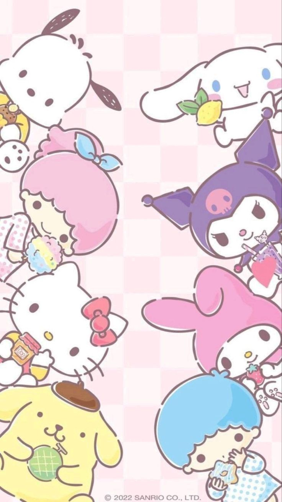

Sanrio es una empresa japonesa fundada en 1960, conocida mundialmente por crear personajes adorables y productos relacionados con ellos. Su personaje más famoso es Hello Kitty, pero la compañía ha desarrollado muchos otros como My Melody, Cinnamoroll, y Kuromi.
Le encanta el arroz con curry y a veces dice: "¡Cheeky but charming!"
Le encanta la tarta de manzana y suele decir: "You can never have too many friends"
Le encanta el pastel de almendras y a veces dice: "Kindness is everything"
Además, sanrio no solo se dedica a crear personajes adorables para productos, también ha producido series animadas, películas y especiales de TV y especiales de TV protagonizados por sus personajes. Estas producciones han ayudado a dar vida a sus personajes y a conectar con distintas audiencias, desde niños pequeños hasta adultos jóvenes. Entre las series más conocidas está Hello Kitty's Furry Tale Theater (1987), donde Hello Kitty y sus amigos recrean cuentos clásicos de forma divertida. Más adelante, Hello Kitty's Paradise (1999) mostró una versión más cotidiana y educativa del personaje, enfocada en niños en edad preescolar.
